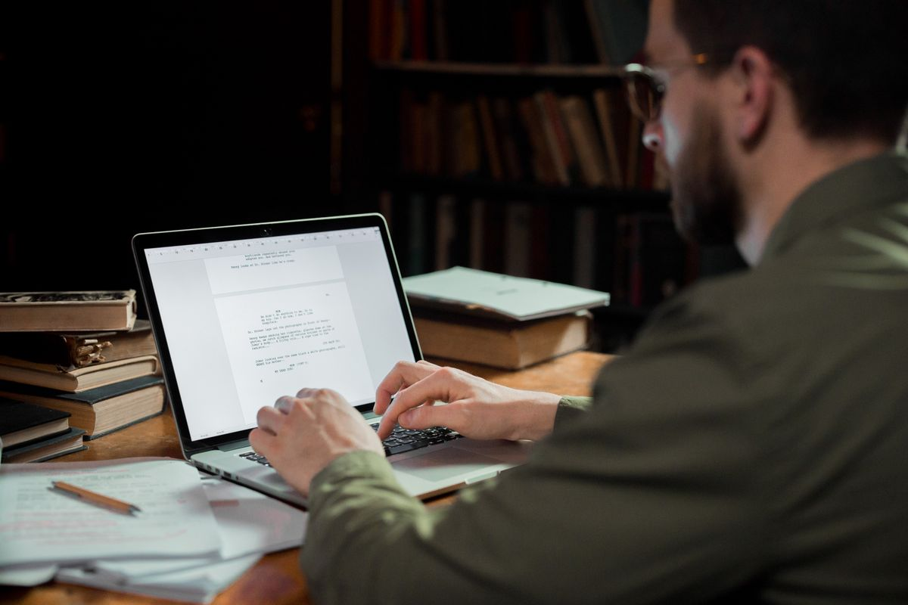

Laptop baru kamu ternyata hanya membawa aplikasi kantor versi percobaan, atau langganan Microsoft 365 di laptop lama sudah habis, padahal besok ada berkas .docx dari dosen dan tabel .xlsx dari kantor yang harus kamu buka. Kamu tidak harus buru-buru berlangganan, dan kamu jelas tidak perlu mencari bajakan. Ada LibreOffice, alternatif gratis Microsoft Office yang sumber terbuka dari The Document Foundation dan bisa kamu pasang di Windows, macOS, dan Linux. Karena aplikasinya terpasang di komputermu, kamu tetap bisa bekerja walau internet sedang mati.
Artikel ini membahas isi paketnya, cara memasangnya dari situs resmi, cara mengatur format simpan supaya tetap .docx, .xlsx, dan .pptx, dan batas jujurnya, berdasarkan dokumentasi resmi LibreOffice per Oktober 2026.
Isi satu paket LibreOffice
Satu kali pasang, kamu langsung dapat enam aplikasi. Writer untuk menulis dokumen seperti surat, laporan, dan tugas. Calc untuk tabel dan hitungan seperti anggaran dan rekap nilai. Impress untuk membuat slide presentasi. Lalu ada Draw untuk diagram, Base untuk basis data sederhana, dan Math untuk menulis rumus. Untuk kebutuhan sehari-hari, tiga nama pertama yang paling sering kamu pakai.
Bagian pentingnya ada di kecocokan berkas. Menurut halaman bantuan resmi LibreOffice, berkas Microsoft Word yang berakhiran .doc dan .docx akan terbuka di Writer, berkas Microsoft Excel .xls dan .xlsx terbuka di Calc, dan berkas Microsoft PowerPoint .ppt, .pps, dan .pptx terbuka di Impress. Dokumen yang kamu buat atau sunting juga bisa disimpan kembali ke format Microsoft Office itu, jadi temanmu yang masih memakai Word atau Excel tetap bisa membuka kirimanmu seperti biasa.
Cara pasang LibreOffice dari situs resmi
Supaya aman, unduh hanya dari situs resmi LibreOffice, bukan dari situs unduhan acak yang sering menyisipkan program tambahan. Urutannya begini:
- Buka situs resmi LibreOffice di libreoffice.org, lalu masuk ke halaman Download.
- Pilih versi yang sesuai dengan sistem komputermu, apakah Windows, macOS, atau Linux. Di komputer Apple, perhatikan juga pilihan prosesor Intel atau Apple Silicon bila pilihan itu muncul.
- Unduh berkas pemasangnya, lalu jalankan dan ikuti langkah pemasangan sampai selesai. Kamu tidak diminta membuat akun dan tidak diminta membayar.
- Sesudah terpasang, buka satu berkas lamamu yang paling sering dipakai, misalnya laporan .docx atau rekap .xlsx, untuk memastikan isinya tampil dengan benar.
- Periksa halamannya sebentar: judul, tabel, gambar, dan rumus sederhana. Bila semuanya rapi, kamu sudah bisa memakai LibreOffice untuk berkas berikutnya.
LibreOffice dan Microsoft Office bisa berdampingan di satu komputer, jadi kamu tidak wajib menghapus aplikasi lama. Uji dulu beberapa hari dengan berkas salinan, dan pindah penuh hanya bila kamu sudah nyaman.
Atur supaya berkas tersimpan sebagai .docx, .xlsx, dan .pptx
Secara bawaan, LibreOffice menyimpan berkas dalam format OpenDocument: .odt untuk teks, .ods untuk tabel, dan .odp untuk presentasi. Format itu sah dan terbuka, tapi penerima berkasmu mungkin bingung bila yang ia harapkan adalah berkas Word. Untungnya halaman bantuan resmi LibreOffice menjelaskan cara mengganti format simpan bawaan ke format Microsoft Office:
- Buka LibreOffice, lalu masuk ke menu Tools dan pilih Options. Di macOS, menu pengaturannya ada di LibreOffice lalu Preferences.
- Di jendela pengaturan, buka bagian Load/Save, lalu pilih General.
- Di area Default file format and ODF settings, pilih jenis dokumen Text document, lalu ubah pilihan Always save as menjadi Word 2007-365 yang berakhiran .docx.
- Ulangi untuk jenis dokumen Spreadsheet dengan pilihan Excel 2007-365 (.xlsx), dan Presentation dengan pilihan PowerPoint 2007-365 (.pptx).
- Klik OK. Bila saat menyimpan muncul peringatan soal format, pilih tombol untuk tetap memakai format Microsoft Office tersebut.
Sesudah pengaturan ini, kamu tidak perlu lagi memilih jenis berkas setiap kali menekan tombol simpan. Berkasmu langsung tersimpan dalam format yang dikenali aplikasi kantor teman, dosen, atau kantormu.

Batas jujur yang perlu kamu tahu sebelum pindah penuh
Gratis bukan berarti tanpa catatan. Pertama, soal macro. Dokumentasi resmi LibreOffice menyebut macro Microsoft Office memakai kode VBA, sedangkan LibreOffice memakai kode Basic yang berbasis API miliknya sendiri, dan keduanya pada umumnya tidak bisa menjalankan kode macro yang sama persis. Berkas kantor yang hidupnya bergantung pada macro khusus wajib kamu uji dulu, dan jangan hapus aplikasi lama sebelum pengujiannya beres.
Kedua, soal tampilan. Dokumen dengan huruf yang tidak terpasang di komputermu, tabel yang sangat rapat, atau desain slide yang rumit bisa bergeser tampilannya saat dibuka di aplikasi yang berbeda. Ini bukan khusus LibreOffice, hal yang sama bisa terjadi antarversi aplikasi kantor mana pun. Biasakan membuka dan memeriksa berkas penting satu kali sebelum kamu kirim.
Ketiga, soal kerja bareng. LibreOffice adalah aplikasi desktop yang bekerja di komputermu sendiri. Bila pekerjaanmu setiap hari bergantung pada menyunting satu berkas yang sama secara bersamaan lewat layanan awan, alurnya akan terasa berbeda. Untuk menulis dan menghitung sendiri atau bergantian kirim berkas, cara ini tidak masalah.
Kapan LibreOffice sudah cukup, dan kapan belum
Untuk kebanyakan orang, LibreOffice sudah cukup: menulis tugas dan laporan, membuat surat, mencatat anggaran, merekap penjualan usaha kecil, dan menyiapkan slide presentasi kuliah atau rapat biasa. Semua itu bisa kamu kerjakan tanpa biaya langganan dan tanpa internet, lalu hasilnya kamu kirim sebagai .docx, .xlsx, .pptx, atau PDF.
Kamu perlu lebih hati-hati bila berkasmu adalah templat resmi dengan tata letak sangat rumit, lembar kerja penuh macro VBA, atau bila aturan kantor dan kampusmu mewajibkan aplikasi tertentu. Dalam keadaan seperti itu, pakai LibreOffice untuk keperluan pribadi dulu dan pertahankan aplikasi wajib itu untuk berkas resmi.
Intinya
Alternatif gratis Microsoft Office yang resmi dan legal itu ada, namanya LibreOffice. Unduh dari situs resminya, pasang di Windows, macOS, atau Linux, lalu atur format simpan bawaannya menjadi .docx, .xlsx, dan .pptx supaya berkasmu tetap nyambung dengan pengguna Word, Excel, dan PowerPoint. Ingat dua batasnya: macro VBA dan tata letak yang rumit perlu kamu uji dulu. Selama kebutuhanmu menulis, menghitung, dan presentasi biasa, kamu bisa bekerja tenang tanpa langganan dan tanpa bajakan per Oktober 2026.
← Kembali ke Other